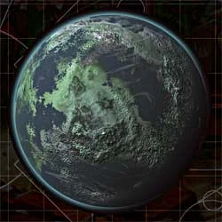

<div class="lore-content">
    <div class="lore-entry">
        <div class="lore-img-area">
            
        </div>
        <div class="txt">
            <h2>Armageddon: The Anvil of the Imperium</h2>
            <p>
                Armageddon stands as one of the most significant hive worlds within the Imperium of Man,
                its name etched in blood and fire across the annals of history. Located within Segmentum
                Solar, Armageddon's importance lies not only in its vast industrial capacity but also in its stra-
                tegic location, serving as a bulwark against the myriad threats that encroach upon the Em-
                peror's domain. Yet for all its strength, Armageddon is a cursed world, a planet forever scarred
                by the horrors that have unfolded upon its surface.
            </p>
            <h2>The World of Armageddon</h2>
            <p>
                Armageddon is a hive world of staggering scale, its surface dominated by sprawling urban
                hives, vast manufactorums, and polluted wastelands. Billions of souls inhabit it colossal cities,
                living and dying in service to the Imperium's insatiable demands for manpower, weapons, and
                resources. Each hive city rises like a mountain of steel and stone, its spires piercing the
                poisoned sky, while its lower levels descend into the choking darkness of decay and neglect.
            </p>
            <p>
                The planet’s primary exports include war machines, heavy munitions, and refined pro-
                methium, all produced in quantities sufficient to sustain entire Imperial crusades. The planet's
                industrial output is rivaled only by forge worlds, and its manufactorums are among the largest
                in the Segmentum. This productivity comes at a cost: Armageddon’s atmosphere is a toxic
                soup of ash and chemicals, its rivers run thick with sludge, and its soil is long since barren.
                The planet is kept habitable only by ancient atmospheric processors and the stubborn resili-
                ence of its population.
            </p>
            <p>
                The land beyond the hive cities is a wasteland of ash deserts, irradiated plains, and pro-
                methium fields dotted with drilling rigs. These uninhabitable expanses are patrolled by the
                Armageddon Steel Legion, the planet's renowned Astra Militarum regiments, who defend
                against bandits, mutants, and worse.
            </p>
        </div>
    </div>
</div>